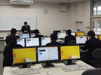
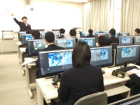

ゲーム開発へ進んだ卒業生
神戸電子専門学校ゲーム開発研究学科へ進んだ卒業生は、高校で3DCGとPhotoshopに取り組み、進学後はC言語とゲーム制作をさらに深めています。同校では企画、実装、3D、チーム制作まで学びが続きます。
進路と卒業生
ゲーム、CG、Web、広告、情報処理など、目指す職種に近い設備と制作課題を持つ専門学校へ進んでいます。
神戸電子専門学校ゲーム開発研究学科へ進んだ卒業生は、高校で3DCGとPhotoshopに取り組み、進学後はC言語とゲーム制作をさらに深めています。同校では企画、実装、3D、チーム制作まで学びが続きます。
2018年は2Dシューティング、2019年は3Dの船を動かすゲームプログラミング体験が行われました。
HTML・CSS、画像素材、メディア制作を組み合わせ、ページとして情報を届ける基礎を学びます。


